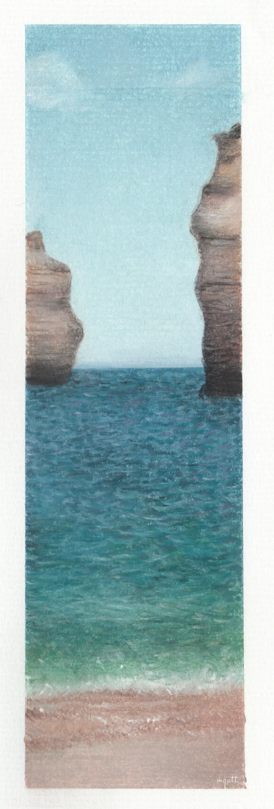
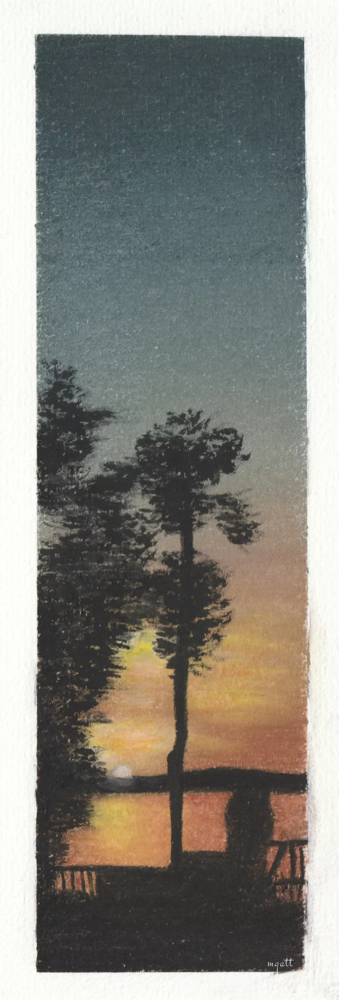
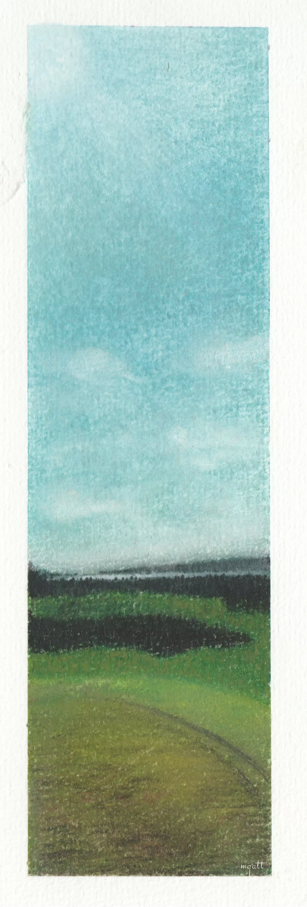
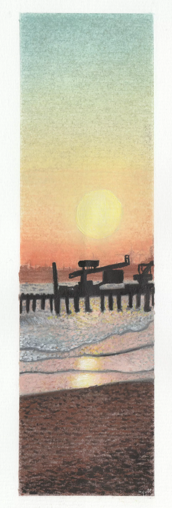
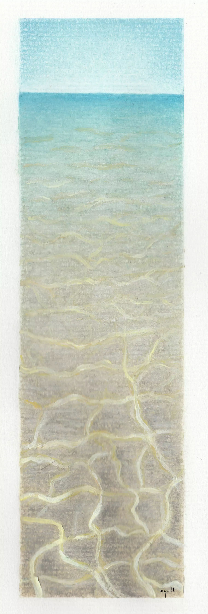
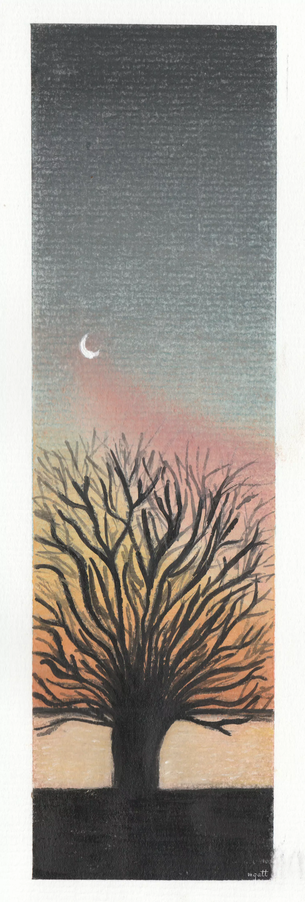
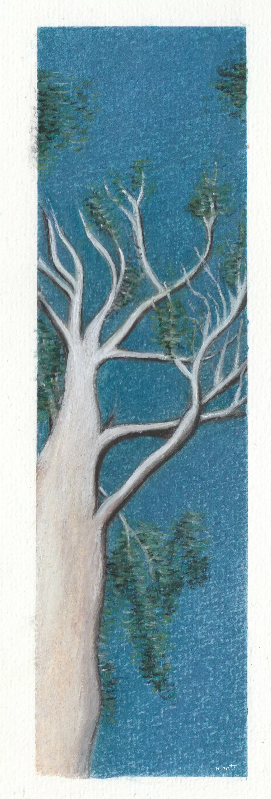
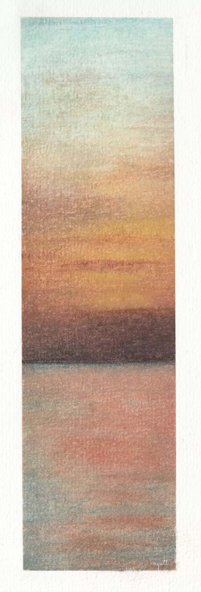
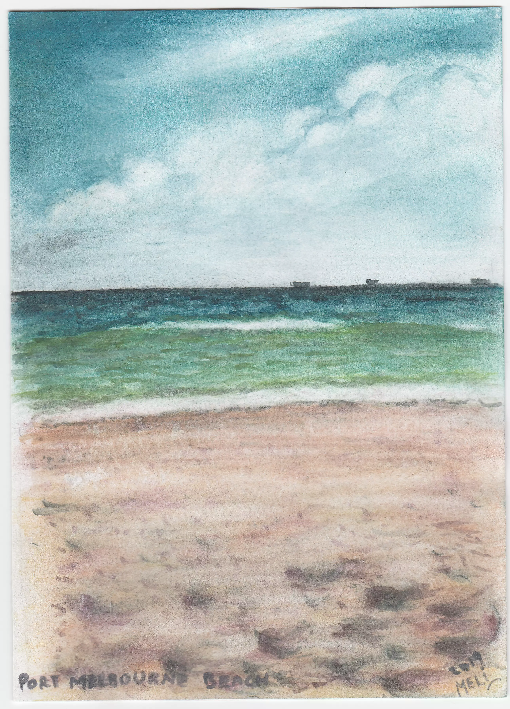
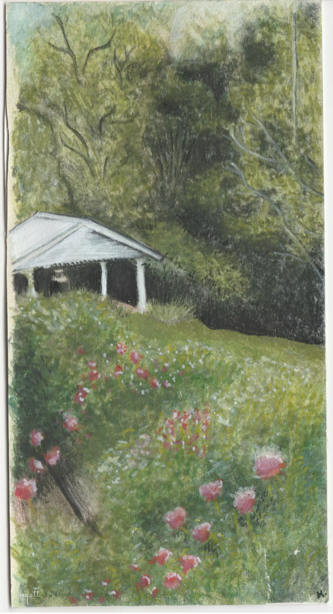

Mont Marte pastel pencils and Pastel pad. The idea was to experiment with water, create movement and stillness of the giant rocks.
Better days ahead
Phillip island.

Mont Marte pastel pencils, Faber-Castell Pitt Pastel Pencil, soft pastel bars, Pastel paper. Experimenting sunset with water reflections and dark shapes.
Verde & Plata
Phillip island.

Mont Marte pastel pencils, soft pastel bars, Pastel paper. Experimenting drawing clouds, sunshine and greenery texture.
Oneself
Port Melbourne beach.

Mont Marte pastel pencils, Faber-Castell Pitt Pastel Pencil, soft pastel bars, Reeves Pastel paper. I challenge myself to paint water and sun reflections on the water, I used acrylic paint for accents.
Island Memories
Sandringham beach.

Mont Marte pastel pencils, Faber-Castell Pitt Pastel Pencil. Acrylic paint. Reeves pastel pad. In this postcard I focused on creating a transparent look for the water, paying attention on the light reflection and sand tones.
Summer night
Phillip island.

Mont Marte pastel pencils, Faber-Castell Pitt Pastel Pencil, soft pastel bars, Reeves Pastel paper. Experimenting painting dark shapes using acrylic paint over pastel to gain more intensity.
A Koala's home
Great ocean road.

Mont Marte pastel pencils, soft pastel bars, Pastel paper. My first time painting a solid color area, here I challenge myself to paint a bright blue sky and blend by layers.
Quietud
Sandringham beach.

Mont Marte pastel pencils and paper. this was the first sunset I painted using pastel pencils, I experimented using for the first time pastel pencil stumps to blend the colors.
New beginnings
Port Melbourne beach.

Mont Marte pastel pencils, pastel pad. My second pastel pencil drawing, I used a watercolour brush to help me painting the water, I made up a technique by mixing water with pastel pencil powder to get a watercolour consistency.

Mont Marte pastel pencils and paper. My first time using pastel pencils, I literally had no idea what I was doing, but I keep trusting the process, adding light layers of color and blending. The details were done by using a Watercolor Reservoir Brush.